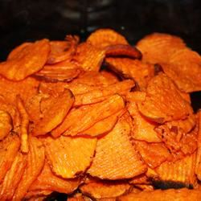

Spicy Sweet Potato
Index Pancakes Spaghetti
Prep: 15 mins
Cook: 15 mins
Total: 30 mins
Servings: 6
Yield: 3 cups

These sweet and spicy baked sweet potato fries go great with
burgers. Use this as a substitute for French fries.
Ingredients:
- 2 tablespoons olive oil
- 2 tablespoons maple syrup
- 1/4 teaspoon cayenne pepper
- 3 large sweet potato, peeled and cut into 1/4 inch slices
- salt and pepper to taste
Directions:
- Step: Preheat oven to 450 degrees F (230 degrees C).
Line a baking sheet with aluminum foil
- Step: Stir together olive oil, maple syrup, and cayenne
pepper in a small bowl. Brush the sweet potato slices with
the maple mixture and place onto the prepared baking sheet.
Sprinkle with salt and pepper to taste
- Step: Bake in preheated oven for 8 minutes, then turn the
potato slices over, brush with any remaining maple mixture,
and continue baking until tender in the middle, and crispy
on the edges, about 7 minutes more.